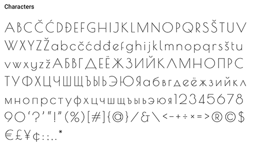
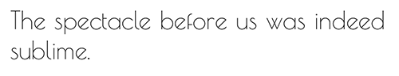

Google Font: Poiret One
Poiret One is a free font on Google that was designed by Denis Masharov. The typeface has a light form with very thin and stylish lines, and it has a sleek and simple look to the font. The inspiration behind the font is Art Deco and constructivism, and there is only one weight to the font, regular 400. The font is mainly used for large signs, labels, titles, headlines, and graphic designs on the web like motion graphics, posters, logos, etc. The typeface also can be used for short texts and advertising because of its elegant and playful style. The typeface is mainly in the United States, with Ukraine as the second country, and Russia as the third. It is a popular font with over 40 million uses per week, and it is used on over 270,000 websites.
I was unable to find websites that used the font, but this is what Poiret One looks like in use. The font should be used for titles and headlines on websites, but not used as body font because the exotic style.
I like the typeface because of its unique and simple style. The thin lines make the typeface look clean which could be used for a blog. The e is my favorite letter in the typeface because it’s encounter is at a 45-degree angle, so it gives a creative way to showcase the letter. I also like how the uppercase letters are so long and slender. The only thing I dislike about the font is that the lowercase letters are not as long as the uppercase, so it is not represented the same way. It does not have the same elegant effect when it is shorter and bubblier.
